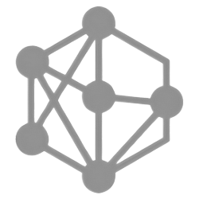
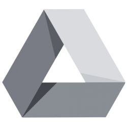

CodebaseChecking…
DriveChecking… BridgeChecking…Loading workflows…
Loading Pylon articles…
Optionally prompt the AI to focus on specific buttons, dialogs, or workflow requirements.
AI output can be inconsistent — review the proposed steps before accepting.
Describe the workflow to get a plan grounded in the codebase before recording.
AI output can be inconsistent — review every step before you record.